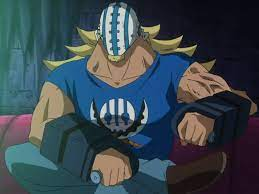
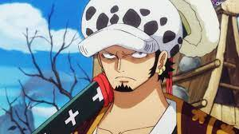
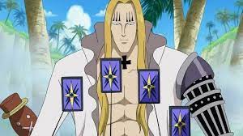
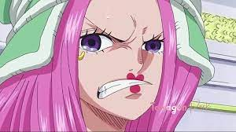
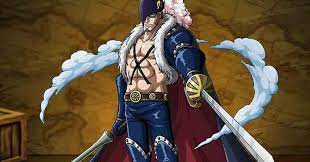
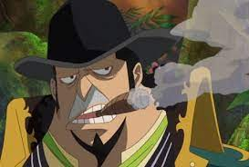
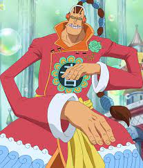

Eustass Kid (ユースタス・キッド Yūsutasu Kiddo), seorang dengan kemampuan
buah setan untuk memanipulasi efek magnet dan kapten bagi kru Bajak Laut Kid.

Killer (キラー Kirā), tangan kanan Kid, juga mendapat julukan ini meskipun dia
bukanlah pengguna buah setan dan bertarung terutamanya mengandalkan kecepatan.

Trafalgar Law (トラファルガー・ロー Torafarugā Rō), seorang pria dengan kemampuan
buah setan paramecia Ope Ope no Mi (オペオペの実) yang mampu menciptakan sebuah "ruangan" di mana
penggunanya memegang kekuasaan penuh akan segala hal di dalam "ruangan" itu.

Basil Hawkins (バジル・ホーキンス Bajiru Hōkinsu), seorang pria dengan
kemampuan buah setan paramecia untuk melakukan voodoo dan kapten bagi kru Bajak Laut Hawkins.

Jewelry Bonney (ジュエリー・ボニー Juerī Bonī) adalah seorang wanita dengan kemampuan
buah setan paramecia yang mampu memanipulasi usia fisik seseorang dan merupakan kapten bagi kru Bajak Laut
Bonney.

X Drake (X・ドレーク X Dorēku) adalah pria dengan kemampuan buah setan zoan yang
membuatnya dapat berubah menjadi seekor tyrannosaurus, merupakan kapten bagi kru Bajak Laut Drake,
dan mantan Laksamana Muda Angkatan Laut.

Capone Bege (カポネ・ベッジ Kapone Bejji) adalah pria dengan kemampuan buah setan
paramecia yang dapat memanipulasi ukuran benda-benda di sekitarnya dan menyimpan pasukan di dalam
tubuhnya, merupakan kapten bagi kru Bajak Laut Firetank.

Scratchmen Apoo (スクラッチメン・アプー Sukuracchimen Apū) adalah seorang pria dengan
kemampuan buah setan paramecia yang dapat memanipulasi anggota tubuhnya menjadi beragam jenis alat musik
yang dapat digunakan sebagai senjata, merupakan kapten bagi kru Bajak Laut On Air.
Urouge (ウルージ Urūji) adalah pria asal Skypiea dengan kemampuan buah setan paramecia
yang membuatnya dapat memperbesar masa ototnya, merupakan kapten bagi kru Bajak Laut Fallen Monk.
Sekelompok orang yang terdiri dari kru bajak laut One Piece yang masih muda.
Mereka merupakan bajak laut pendatang baru di dunia One Piece yang mempunyai
kekuatan dahsyat dan berpotensi menjadi bajak laut besar di kemudian hari